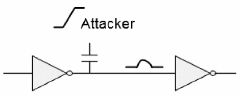
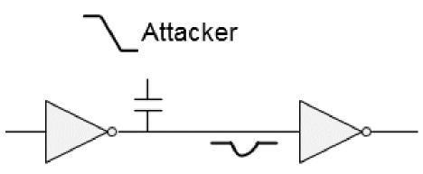
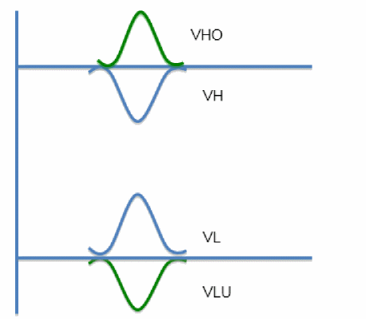
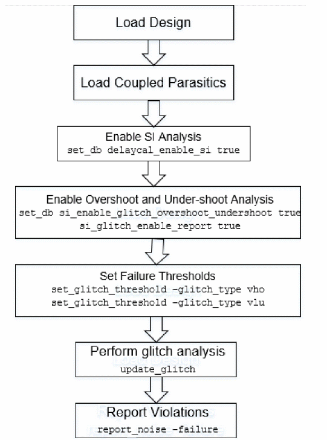

Overshoot-Undershoot Glitch Analysis - An Overview
The Tempus software allows you to perform overshoot and undershoot analysis. The life span of transistors can be described by the overshoot and undershoot values. If a transistor is consistently exposed to a certain percentage of overshoot/undershoot, then it may suffer a reduced life span. Tempus analyzes and generates reports for such cases.
Due to cross-coupled capacitance between interconnects, switching activity of one net (attacker) can induce undesirable noise (glitch) on a static ‘victim’ net. This glitch can be classified into four categories based on the victim state and attackers' switching direction, as shown in the table below.
Table -3 Classification of glitch
| Glitch Type | Victim State | Attacker Switching |
The glitch types VL and VH, mentioned in Table 1, can result in functional failures, if the glitch exceeds the logic threshold.
The glitch types, VLU and VHO, are known as undershoot and overshoot, respectively. While VLU (undershoot) and VHO (overshoot) do not cause any immediate silicon failure, exposure to VLU/VHO glitch over a period of time causes degradation of the gate-oxide, which increases the threshold voltage (Vth), and in turn can cause silicon failure.
The following figures indicate the type of glitch waveform:


Figure -54 VL, VH, VLU, and VHO glitch waveforms

Tempus performs overshoot-undershoot glitch analysis by analyzing each potential victim net in the design. The analysis of each net is based on calculating the worst-case glitch waveform that can occur at the input pins of each of the victim nets' receivers.
The VLU/VHO type of noise cannot propagate through a transistor, and therefore, Tempus does not perform the glitch propagation and ROP (Receiver Output Peak) computation in overshoot-undershoot analysis.
Overshoot-Undershoot Analysis Flow
To run overshoot-undershoot analysis, perform the following steps:
- Setup the design for SI analysis.
-
Enable overshoot-undershoot analysis:
set_db si_enable_glitch_overshoot_undershoot
-
Set failure thresholds:
set_glitch_threshold
-glitch_type vho/vlo -
Analyze overshoot and undershoot glitches:
update_glitch
You can also use the update_timing and report_timing commands for overshoot/undershoot glitch analysis and reporting.
The following figure shows the overshoot-undershoot analysis flow.
Figure -55 Overshoot-Undershoot Analysis Flow

Reporting
The reporting structure of the overshoot-undershoot analysis is similar to that of traditional glitch analysis.
--------------------------------------------------------------------------------
Peak(mV) Level TotalCap(fF) TotalArea Width(ps) Vdd(mV) Library VictimNet
310.282 VLU 50.91 29.49 190.083 740 ssg3sigma_0p74v_0c u1_ud_lpu/u0_ud_lpu_logic/u0_ud_udm/umh_udm_wdata_rw_q1_77__ATdrc_i29398/A {u1_ud_lpu/u0_ud_lpu_logic/u0_ud_udm/umh_udm_wdata_rw_q1_77__ATdrc_401797}
Receiver Input Threshold:
Status Slack Value (Threshold) ReceiverNet Receiver failure_type ReceiverThresholdType
VIOLATED -236.282 310.282 (74.000) u1_ud_lpu/u0_ud_lpu_logic/u0_ud_udm/umh_udm_wdata_rw_q1_77__ATdrc_i29398/A (DLY2_X4M_A12TS_C35) [bbox] Global
Constituents:
Source Peak(mV) Offset(ps) Slew(ps) Xcap(fF) Vdd(mV) Edge Status Net
Cpl: 117.124 32.000 26.500 7.246 740 F ACT sb_r2_o_ATr_201
Cpl: 111.941 52.000 30.875 16.054 740 F ACT ad_r0_o_8_ATm_19
Cpl: 64.862 36.000 29.500 5.680 740 F ACT rw_o_16_ATm_19
Cpl: 16.355 42.000 32.375 1.928 740 F ACT rw_o_21_ATr_14
--------------------------------------------------------------------------------
--------------------------------------------------------------------------------
Peak(mV) Level TotalCap(fF) TotalArea Width(ps) Vdd(mV) Library VictimNet
386.155 VHO 45.02 33.59 173.967 935 ff3sigma_0p935v_125c rw_o_82__ATobuf_i14769/A {rw_o_82_ATr_214587}
Receiver Input Threshold:
Status Slack Value (Threshold) ReceiverNet Receiver failure_type ReceiverThresholdType
VIOLATED -12.155 386.155 (374.000) rw_o_82__ATobuf_i14769/A (BUFH_X7P5M_A12TS_C35) [bbox] Global
Constituents:
Source Peak(mV) Offset(ps) Slew(ps) Xcap(fF) Vdd(mV) Edge Status Net
Cpl: 214.724 26.000 8.625 14.204 935 R ACT rw_o_45_ATr_141
Cpl: 151.118 20.000 11.250 6.460 935 R ACT rw_o_136_ATr_141
Cpl: 20.314 15.000 9.750 2.056 935 R ACT rw_o_4_ATr_14186
Cpl: 0.000 0.000 14.000 2.909 935 R SB rw_o_45_ATr_1235
Cpl: 0.000 0.000 12.000 1.679 935 R SB rw_o_136_ATd_380
--------------------------------------------------------------------------------
The report_noise command parameters, such as, -failure, -format, -histogram, -nets, -style, -threshold, -out_file, and -view work with the overshoot-undershoot reporting as well.
For more information, refer to Tempus Text Command Reference Guide.
Return to top